받는 쪽: 도메인 업체에서 메일 전달 걸기
이 방법은 메일을 받는 길과 보내는 길을 따로 놓아요. 받는 길은 도메인 업체가, 보내는 길은 Gmail이 맡아요. 아래 그림의 위쪽 줄이 이 섹션에서 할 일이고, 아래쪽 줄은 다음 섹션에서 다뤄요.
별칭 하나 만들기
도메인을 산 곳의 관리 화면으로 가요. 영상은 Namecheap에서 도메인의 Manage를 누른 뒤 아래로 내려가 'REDIRECT EMAIL' 칸을 찾아요. Add Forwarder를 누르면 왼쪽 Alias 칸에 만들 주소의 앞부분을, 오른쪽 Forward to 칸에 받을 Gmail 주소를 적어요.
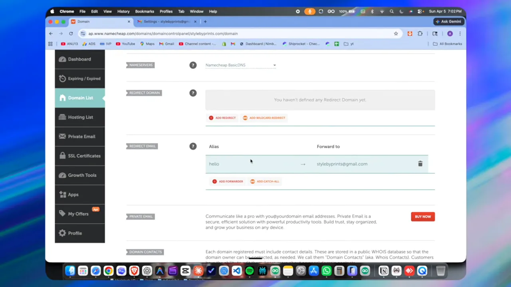
별칭은 여러 개 둘 수 있어요. 영상은 hello 아래에 support와 이름 별칭을 하나 더 만들었고, 오른쪽 열을 보면 셋 다 같은 Gmail로 가요. 메일 서버나 호스팅을 따로 둘 필요가 없어요.
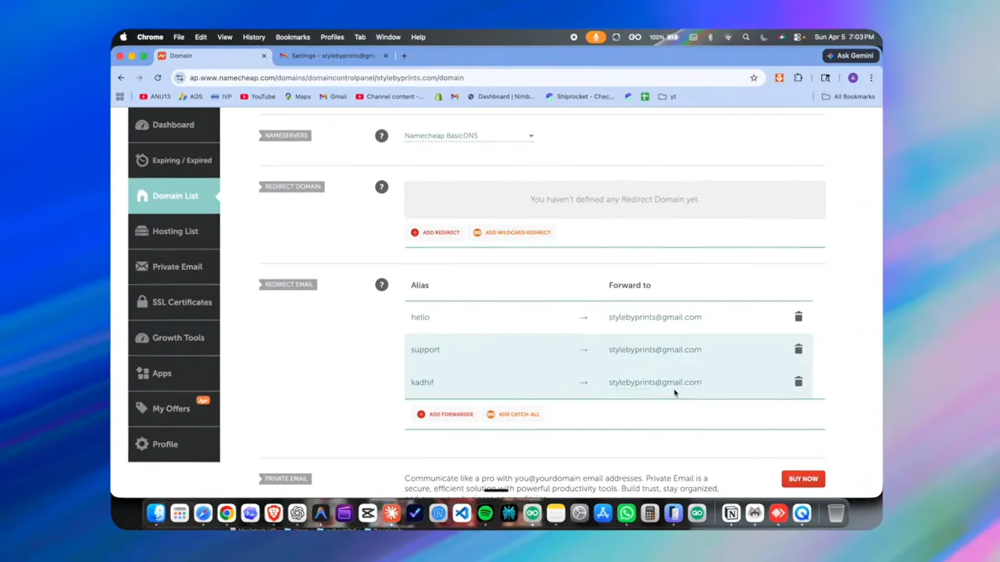
전달이 되는지 확인하기
다른 메일 계정에서 hello@stylebyprints.com으로 시험 메일을 보내 봐요. Gmail에 도착한 메일의 상세 정보를 펼치면 to 줄에 도메인 주소가 있고, mailed-by 줄에는 Namecheap의 전달 서버(eforward.registrar-servers.com)가 찍혀 있어요.
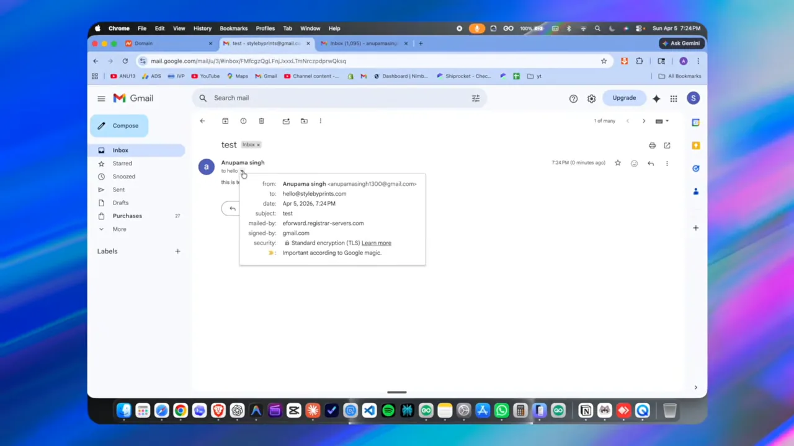
보내는 쪽: Gmail에 도메인 주소 등록하기
전달만 걸어 둔 상태에서 답장을 누르면 보낸 사람이 개인 Gmail 주소로 나가요. 도메인 주소로 보내려면 Gmail에 그 주소를 '내가 가진 다른 주소'로 등록해야 해요. 순서는 이래요.
- Gmail 설정에서 '계정 및 가져오기' 탭을 열어요 — 톱니바퀴 → 모든 설정 보기 → Accounts and Import.
- Google 계정에서 앱 비밀번호를 만들어요 — 보안 설정에서 '앱 비밀번호'를 찾아 이름을 넣고 만들어요. 16자리 비밀번호가 담긴 창이 떠요
- '다른 이메일 주소 추가'에 이름과 도메인 주소를 넣어요
- SMTP 서버 정보와 앱 비밀번호를 넣고 계정을 추가해요 확인 메일을 보냈다는 안내가 떠요
- Gmail로 들어온 확인 메일의 링크를 눌러요 Confirmation Success 화면이 떠요
설정 화면에서 '다른 주소에서 메일 보내기' 찾기
Accounts and Import 탭의 'Send mail as' 줄에는 지금 쓰는 Gmail 주소 하나만 있어요. 그 아래 'Add another email address' 링크가 도메인 주소를 추가하는 곳이에요. 영상은 여기서 바로 채우지 않고, 앱 비밀번호부터 만들러 가요.
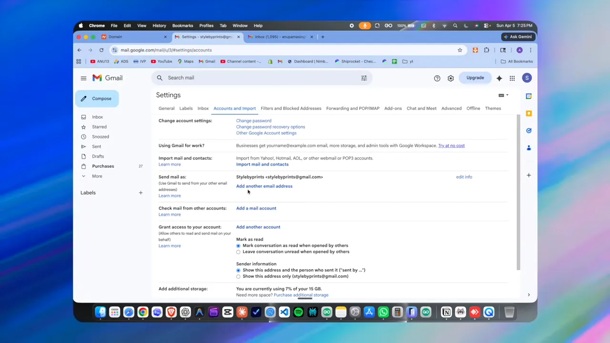
앱 비밀번호 만들기
Google 계정의 App passwords 페이지에는 이름을 넣는 칸(App name)과 Create 버튼만 있어요. 영상은 'stylebyprints email Gmail'처럼 알아보기 쉬운 이름을 붙였어요.
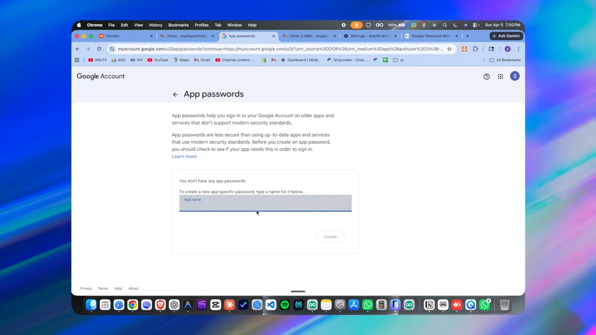
만들면 'Generated app password' 창에 비밀번호가 한 번 보여요. 영상은 가운데를 가렸어요. 창 아래 설명에도 이 비밀번호가 계정 전체에 접근할 수 있으니 적어 두거나 남과 나누지 말라고 쓰여 있어요.
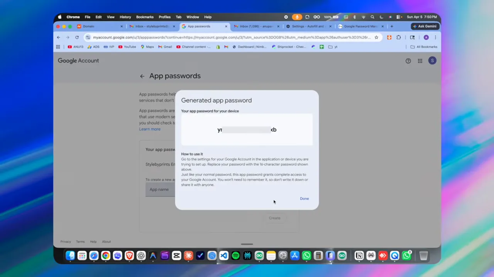
SMTP 정보 넣기
Gmail 설정으로 돌아와 이름과 hello@stylebyprints.com을 넣고 다음 단계로 가면 'Send mail through your SMTP server' 창이 떠요. 칸마다 넣는 값은 이래요.
| 칸 | 넣는 값 | 짚을 점 |
|---|---|---|
| SMTP Server | smtp.gmail.com | 도메인 업체가 아니라 Gmail의 발신 서버예요 |
| Port | 587 | 화면에서 고르는 목록에 있어요 |
| Username | 내 Gmail 주소 | 영상은 stylebyprints@gmail.com |
| Password | 앱 비밀번호 | 평소 Gmail 비밀번호가 아니에요 |
| 보안 연결 | TLS(Transport Layer Security) | 화면에 recommended로 표시돼 있고 기본으로 골라져 있어요 |
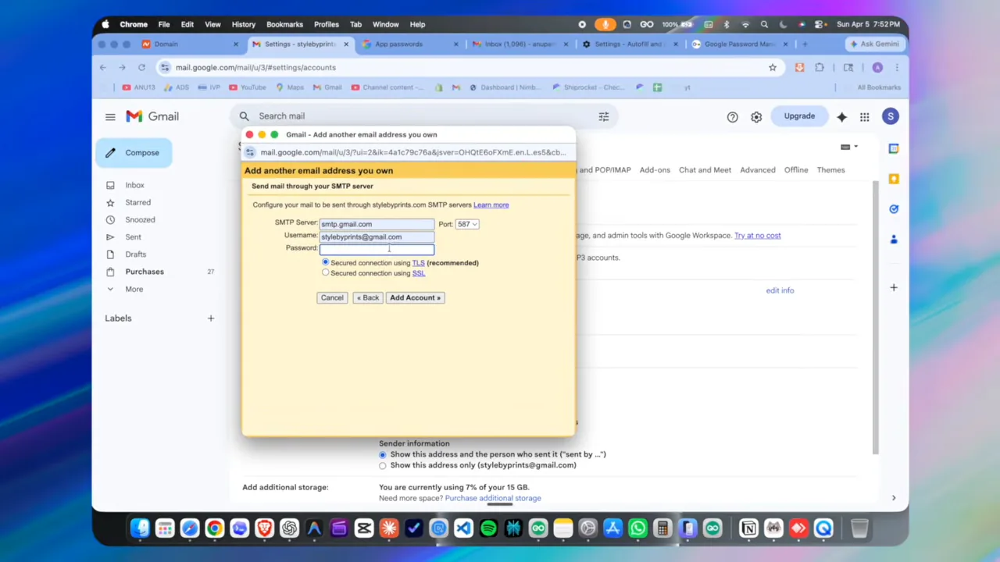
확인 메일로 마무리하기
Add Account를 누르면 창이 바뀌면서 서버를 찾고 자격 증명을 확인했다는 문구가 나와요. 그 아래에 hello@stylebyprints.com으로 확인 링크를 보냈다고 적혀 있어요. 뒤쪽 설정 화면의 새 주소 줄에는 아직 'unverified'가 붙어 있어요.
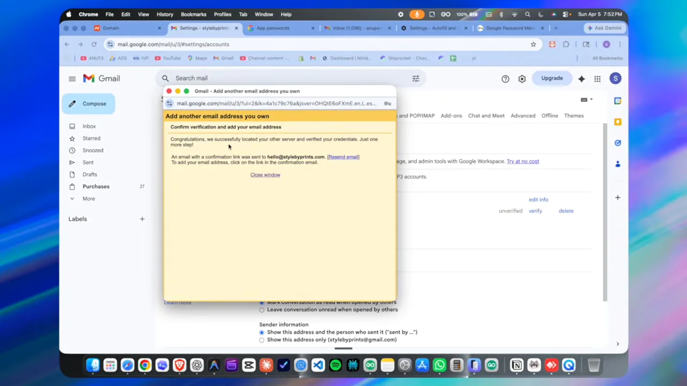
Gmail로 들어온 확인 메일의 링크를 누르면 'Confirmation Success' 페이지가 떠요. 이 Gmail 사용자가 이제 hello@stylebyprints.com으로 메일을 보낼 수 있다는 문장이 보이면 끝이에요.
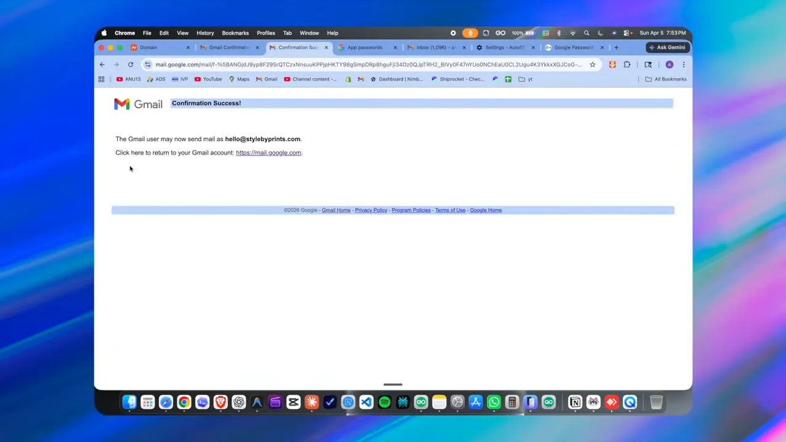
시험 발송과 기본 주소 지정
새 메일 창을 열면 맨 위 From 줄 오른쪽에 작은 화살표가 생겨요. 누르면 원래 Gmail 주소와 새로 등록한 도메인 주소 중에서 고를 수 있어요. 아래 화면은 아직 기본값인 Gmail 주소가 잡혀 있는 상태예요.
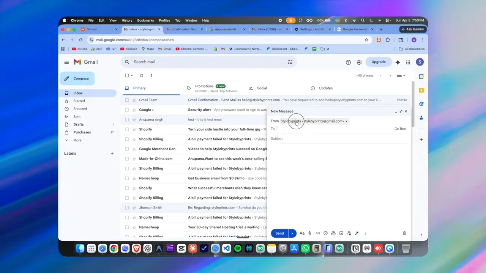
받는 쪽 계정에서 시험 메일을 열어 상세 정보를 보면 from 줄이 Stylebyprints <hello@stylebyprints.com>이에요. 그런데 같은 줄 끝에 'via gmail.com'이 붙어 있고, mailed-by도 gmail.com이에요.
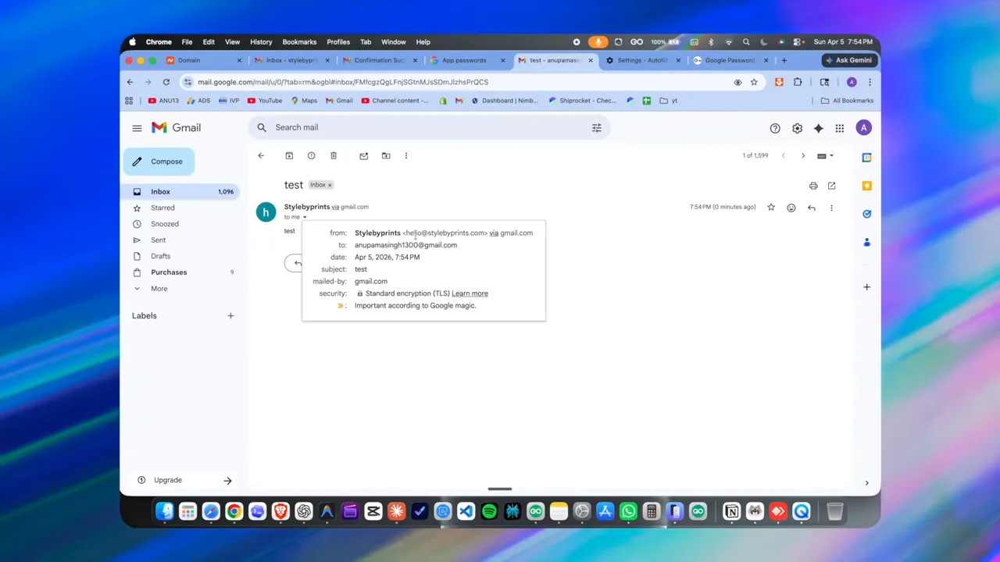
영상은 아무도 뒤에 Gmail이 있는 줄 모를 거라고 해요. 하지만 위 화면처럼 메일 정보를 열어 보면 알 수 있어요. 겉으로 보이는 주소가 전문적으로 바뀌는 것까지가 이 방법이 해 주는 일이에요.
nobody will ever know it is just Gmail running behind the scenes.
뒤에서 그냥 Gmail이 돌아간다는 걸 아무도 모를 거예요.
— 영상 00:00
도메인 주소를 기본값으로
매번 From을 바꾸기 번거롭다면 설정 → 계정 및 가져오기로 돌아가요. 목록에서 도메인 주소 옆 'make default'를 누르면 끝이에요. 그 뒤로 새 메일 창을 열면 From 줄에 hello@stylebyprints.com이 처음부터 잡혀 있어요.
모든 처리가 Gmail 계정 안에서 일어나니까 휴대폰 Gmail 앱에서도, 컴퓨터에서도 똑같이 쓸 수 있어요.